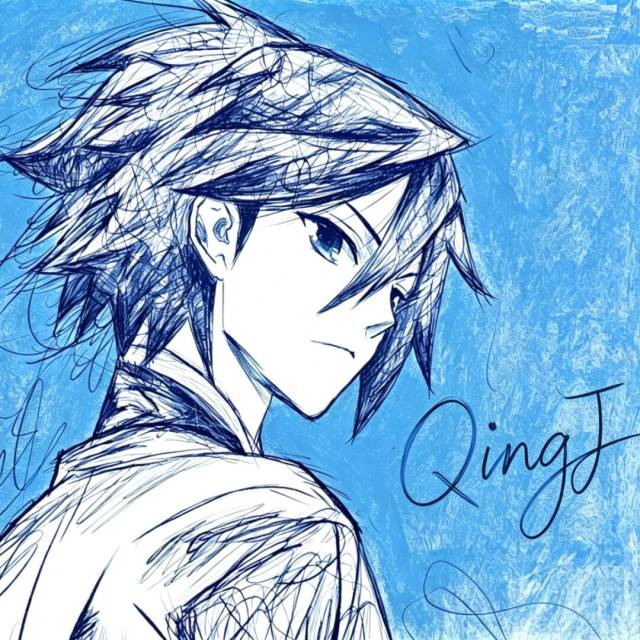

@一只情酱
Freshman / AGI explorer / Entrepreneur
我是 QingJ，一个大一学生、AGI 探索者和创业者。我在做个人 Agent 与 AI 产品，也在思考模型的能力，怎样变成日常真正用得上的东西。
qingj1314@163.com BASED IN CHINA
(01) / A LITTLE ABOUT ME
模型、产品，还有那些想做成的事。

Freshman / AGI explorer / Entrepreneur
我是 QingJ，一个大一学生、AGI 探索者和创业者。我在做个人 Agent 与 AI 产品，也在思考模型的能力，怎样变成日常真正用得上的东西。
Learn.
Build.
Repeat.
从理解模型，到做出产品。
缩短想法与实践之间的距离。
记忆、约束、验证与恢复，让 Agent 的工作更可靠。
探索多 Agent 协作如何成为可用的产品体验。
理解基座模型的架构、训练与推理。
个人 Agent 的实践，以及从原型到商业产品的落地。
打开 GitHub 查看公开动态。
SINCE 2021
“不诱于誉，不恐于诽，
率道而行，端然正己。”
(02) / THE JOURNEY
从第一行代码，到下一次尝试。
受邀成为新知 Playground 嘉宾。
受邀成为知乎 TechClub 嘉宾；获知乎日报报道；获得 AdventureX26 二等奖。
担任 MiniMax DevMeetup 上海站分享嘉宾。
获知乎科技创作者卓越新锐奖。
用 Rust 写了一封情书——Pebble 邮件客户端；把踩过的坑整理成 Harness Engineering 系列
Clyde 桌宠上线，会盯着你写代码的那种，125+ Stars；顺手做了 AiMsgExport；开始在知乎写东西
Agent-Zhihu 拿下首届 A2A 全球黑客松奖项；同期交出 Axiom 和 Req-2-Rank
新年第一行代码给了 QListen 和 OneLook，一个听歌一个画脑图
年末三连发：Get-Microsoft-Rewards、CodeDiary、Bad-Mood-Crusher；博客被 XSS 了一刀，痛定思痛修好了
做了个搜索引擎叫 Sokudo，名字比速度快
终于有了自己的主页 QingJ01.github.io，在互联网上正式有了一张脸
byebug.cn 域名上线，和旧域名说了声再见；发布搜索引擎净化脚本
写了几个小工具练手，又把油猴脚本的心得写成了一篇「开发指北」
123Pan Unlock——第一个真正意义上的开源作品，后来它替我收下了 1K+ Stars
给王者荣耀写了个战力查询 API，算是第一次把代码变成别人能用的东西
做了一款游戏工具 App，UV 5W+，第一次感受到「被需要」的感觉
开始系统性学习编程，可惜入门语言是 PHP（别笑）
ChatGPT 发布，第一次体验到 LLM，突然觉得编程的天花板又高了一截
用 Typecho 搭了个博客，想着总该有个地方记录自己走过的路
开始写公众号，试着把想法讲给更多人听
开始接触逆向，掌握 GG 修改器，拆别人的代码比写自己的有意思多了
写下第一行代码，屏幕亮起来的那一刻，好像什么都不一样了
一条时间线，装不下那些深夜的崩溃和天亮后的不甘
(03) / SELECTED WORK
一个本地优先的桌面邮件客户端。统一收件箱、全文搜索与规则自动化，让邮件回到简单、顺手的状态。
AI 工具之间的共享记忆层。通过 MCP 连接个人、项目与团队上下文，让记忆随着你在不同工具之间流动。
从一个想法到第一批用户。用候补名单、更新日志、公开路线图和反馈，连接独立开发者与他们的用户。
面向英语学习者的 AI 口语练习应用。分级学习、场景任务与实时对话，让开口练习成为日常。
(04) / STAY IN THE LOOP
聊产品，聊 AI，也聊一个还没做成的想法。
SAY HELLO
qingj1314